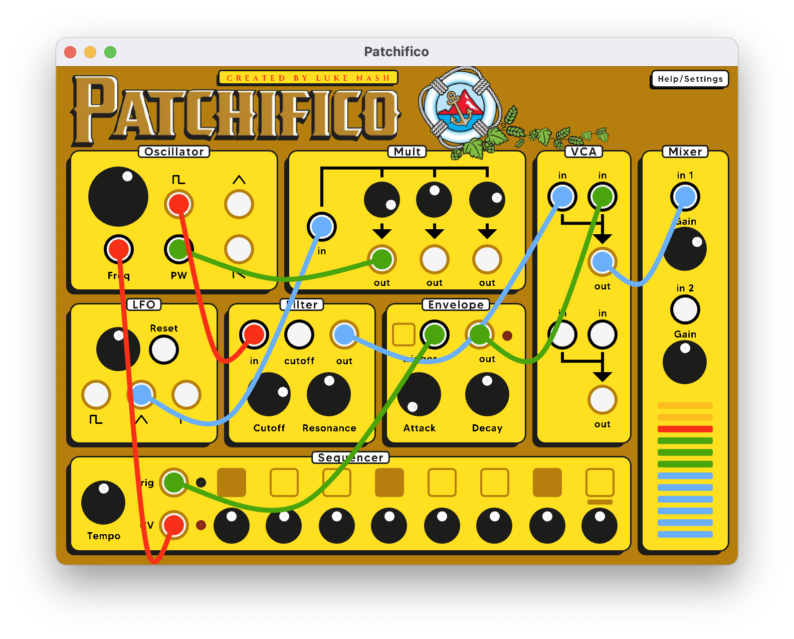
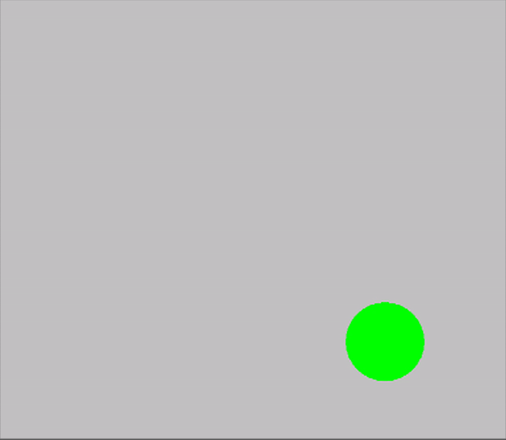
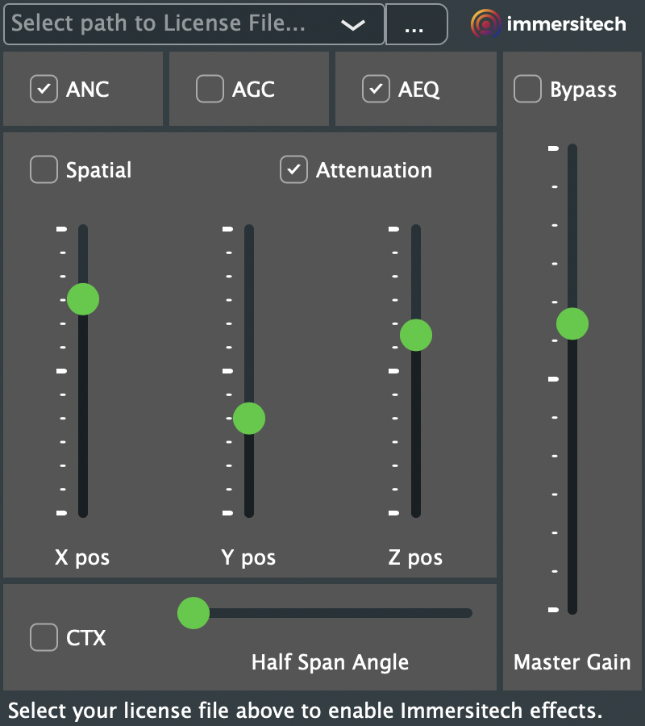

LUKE
NASH
Audio Software Creator
PizzaRat VST Plugin

A saturation/distortion plugin emulating the raw, gritty, unitelligible sound of MTA conductor announcements. Made in collaboration with Jack Tipper and Etienne Mayson.
Patchifico

A virtual modular synthesizer in the theme of Pacifico beer, written in C++.CFrame

A keyframing and easing library written in C++.
Immersitech Demo Plugin

A VST plugin written with JUCE/C++ to utilize Immersitech's noise reduction and 3D spatializing capabilities.